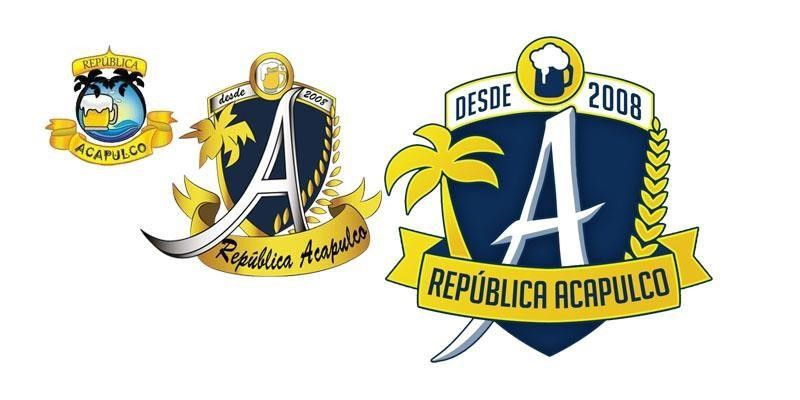

Fundada em 2008 por estudantes de Engenharia da UNESP/BAURU, a tradicionalíssima República Acapulco está localizada no mesmo lugar da sua criação: Rua Luiz Bleriot, 12-48.
Após dez anos de história, cerca de quarenta estudantes da mesma universidade já passaram por aqui e mantemos a mesma ideologia de inovação e superação. Variando de 12 (doze) a 16 (dezesseis) moradores simultâneos, sempre há algo novo que está sendo transmitido aos mais jovens. Atualmente, a casa é composta por doze estudantes da UNESP, mantendo a condição de uma das repúblicas mais tradicionais de Bauru.
Quatro anos após sua criação, a República Acapulco já contava com bastante
notoriedade na região, sendo convidada para participar do programa "A Liga",
da emissora de televisão Bandeirantes. As imagens da república fizeram parte
de um documentário sobre "Festas Universitárias", cedendo espaço para que a
república pudesse apresentar para o Brasil um pouco de sua rotina, organização e
realização de eventos, quebrando o estereótipo presente com a imagem de repúblicas
e mostrando que há muito o que aprender morando em uma.
A república já foi palco de diversas festas universitárias, tendo um público de, em média 550 (quinhentos e cinquenta) pessoas, alcançando seu auge em festas solos como a “Acapulco 10 Anos”, na qual contou com a presença de 3.500 (três mil e quinhentas) pessoas e em sua festa conjunta, a Zé Castanha, cuja última versão, a “Zé Castanha III” contou com um público máximo de 4.000(quatro mil) pessoas.
Alguns fatores foram essenciais para que a república pudesse alavancar e conquistar esse público. Dentre eles, destacamos a criatividade, a inovação e dedicação, que andando juntas e presentes em todas as festas, puderam ganhar destaque em diversos momentos, desde as simples brincadeiras de fantasiar novos moradores para se enturmar e divertir a festa até convidar e oferecer o espaço para apresentação de novas bandas da região e toda a preparação por trás do evento.
Luiz Bleriot 12-48,Vl Aviação
Bauru - SP